R01Art direction
Palette, cuboid primary masses, planar matte shading and small bevels. Not dimension or final equipment authority.
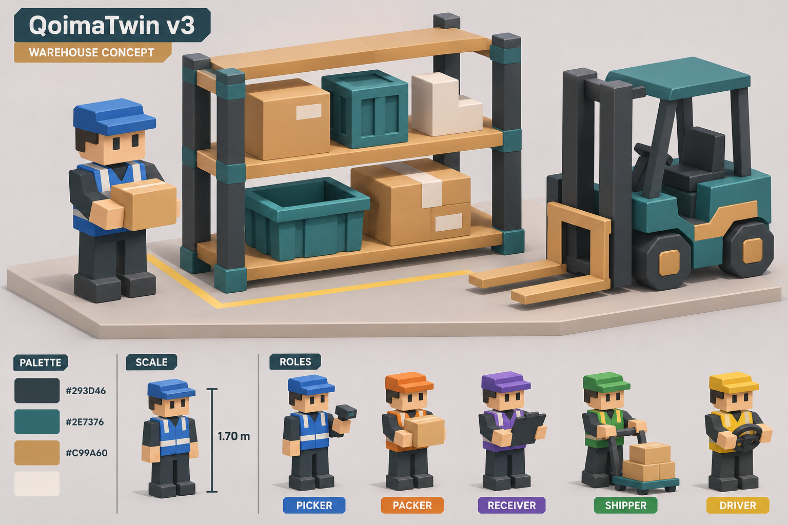
- Large shelf, worker and forklift share thick cuboid masses, matte charcoal/petrol/tan/cream and short stepped bevels.
- Bottom row clearly separates blue/orange/purple/green/yellow role families; headwear and faces are a style cue, refined by R05.
r01-style-board.png · 1536×1024 · SHA256 b39cf5edced8b84e3bde36df6986117898721b3b787fd05073d3b05dd3cc3579
R02Storage construction
Five distinct SMALL/STANDARD/HEAVY/LONG/FLEX forms and connected supports. Future C04 usable dimensions/load/accessibility govern engineering.
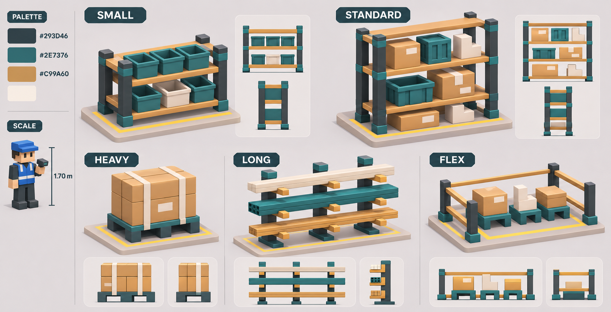
- Five distinct labels/silhouettes: low open bins, three-deck standard rack, fork-access heavy base, three-post cantilever, finite protected FLEX footprint.
- Five quarter views and ten front/side insets show grounded feet, tangible shelf/arm thickness and supporting connections.
r02-storage.png · 1752×897 · SHA256 b2f9581d8e496b729b3516bfc8109ece4047b51865df6058ac6bd5f7a3cac825
R03Cargo design
Eight stable archetype IDs and characteristic construction. Numeric X/Y/Z targets come from the separate common-scale/JSON supplement.
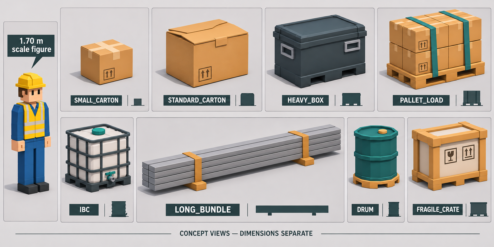
- All eight exact cargo IDs visible; cartons, heavy handled case, strapped pallet, caged/capped/tapped IBC, elongated supported bundle, faceted drum and framed fragile crate remain distinct.
- LONG_BUNDLE ends are fully visible with two straps/supports; footer explicitly separates concept views from dimensions.
r03-cargo.png · 1774×887 · SHA256 31f85867fbdba498f117babba454a96d8fdb3916d067c639f308abe66ef36656
R04Line and pack construction
Continuous supported straight/turn/T transfer surfaces, pack tools and hollow tote/parcel fit. L08/C04 will fix ports and allowed payload geometry.
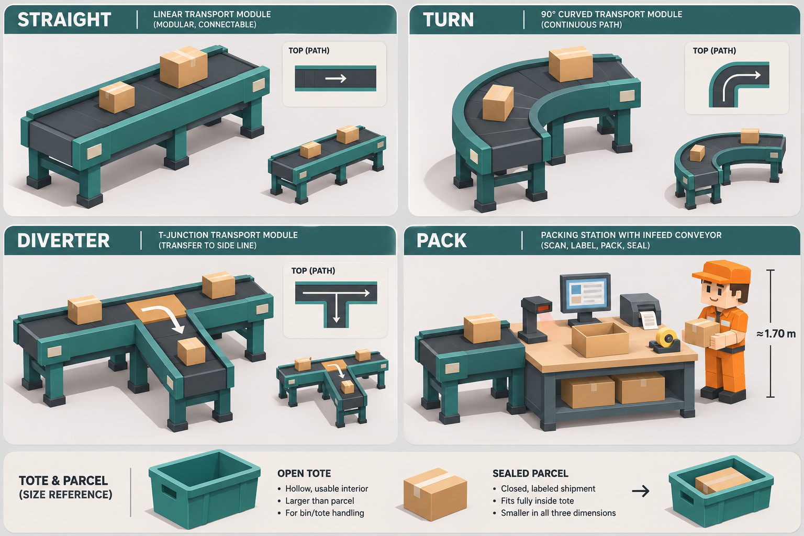
- Straight, supported faceted 90-degree curve and open T transfer agree with their top-path insets; no transverse guard blocks the T deck.
- Pack worktop, lower shelf and legs join; infeed meets its edge. Foreground tote has visible interior and fitted parcel clears rim/walls visually.
r04-packing-line.png · 1536×1024 · SHA256 206ab336a16290b4349200e455e1fbaddce431fabe9049db5dd14915a29f2a9a
R05People and roles
Dedicated four-view body construction plus five vest/headwear colors, symbols and role codes. Governs clothing over contextual figures elsewhere.
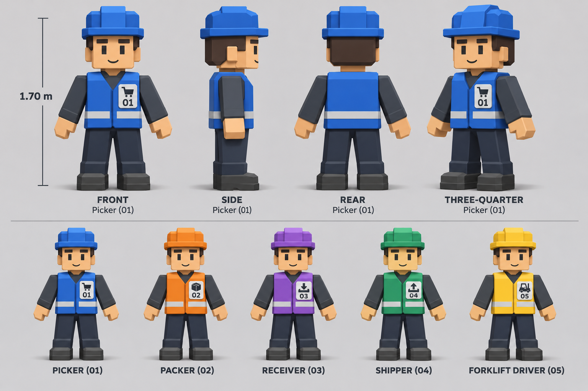
- Front/side/rear/quarter preserve cuboid head, stepped headwear, torso/vest thickness, connected sleeves/hands and grounded boots.
- Five role variants retain dark shared shirt/trousers with colored vest/headwear and badge01/cart,02/carton,03/incoming,04/outgoing,05/forklift.
r05-workers.png · 1536×1024 · SHA256 542f0169e23c732b60c8bda99a5ce0068bd8e4bf256e3810f5a656d79a0aeb1b
R06Forklift construction
Dedicated four-view chassis, four wheels, mast/carriage/two forks, seat and guard. Governs vehicle design over overview miniatures.
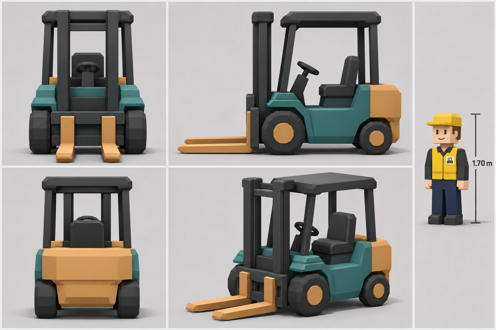
- Four views preserve petrol chassis/tan counterweight, larger front and smaller rear wheels, guard/seat, twin mast rails, bridging carriage and exactly two connected blades.
- Final scale inset now has charcoal sleeves/navy trousers with yellow vest/headwear; ordinary occlusion explains invisible far wheels in some views.
r06-forklift.png · 1536×1024 · SHA256 4f96c33a48d1e51d758edacc51ce0de2eb788eefd9919d986f9405b07b20a2b6
R07Zones and ports
144x72x8 intent, six named perimeter access points and two separated areas per storage type. Future accepted layout supplies executable geometry/graphs.
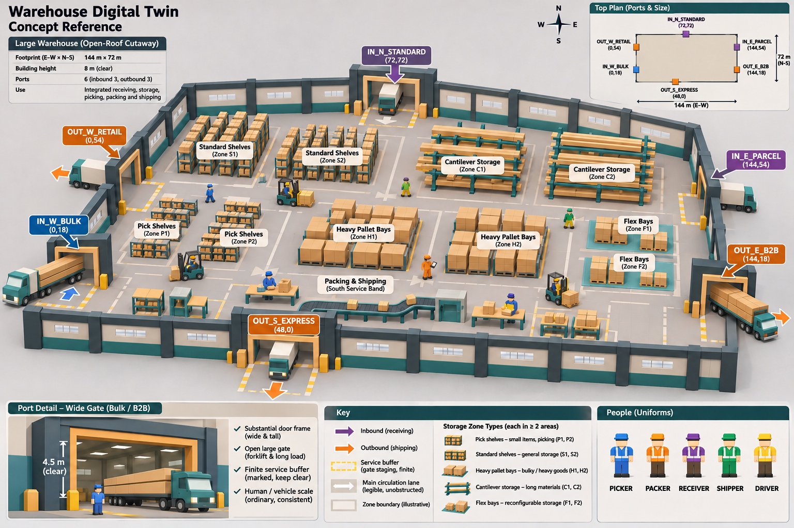
- Three IN and three OUT IDs are readable in the main cutaway and coordinate inset; wide bulk/B2B approaches, finite staging and two areas of each storage type are visible.
- Bottom detail distinguishes4.5m gate clearance from8m building height; corrected role legend has the five intended hues.
r07-ports-zones.png · 1536×1024 · SHA256 91a4583f501c6434e776fe0c67842ebad0ff6abc033c6d7dca11a71b9704e6bc
R08Camera and composition
Useful overview framing and two clear close-camera compositions. Does not override role assignment, cargo size or dedicated object construction.
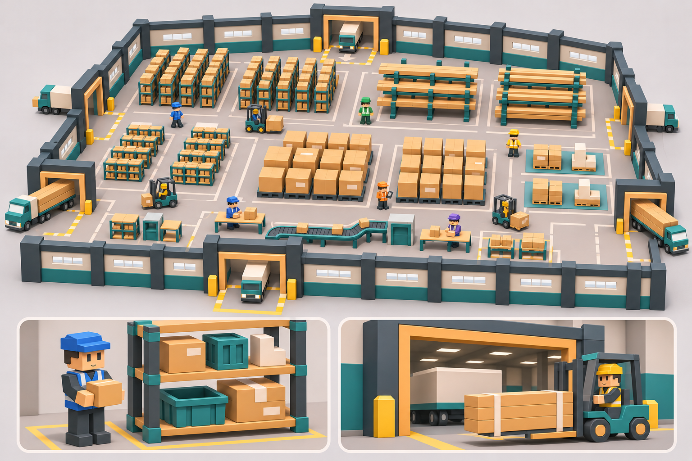
- Warehouse overview occupies useful frame, retains six openings and differentiated low/tall/pallet/long/FLEX masses.
- Lower aisle and loading closeups retain volume, connected structures and human/vehicle readability; no tiny empty warehouse in a large blank canvas.
r08-composition.png · 1536×1024 · SHA256 baada616315ba822b139a9dc4072357d6dbb5d02b04af7fb1dd2198b89f2d6be
R11Picking cart
Dedicated picking-cart construction, four production angles, fitted upper-tray tote and worker/handle grip. R05 governs the contextual worker; numeric values remain synthetic design targets.
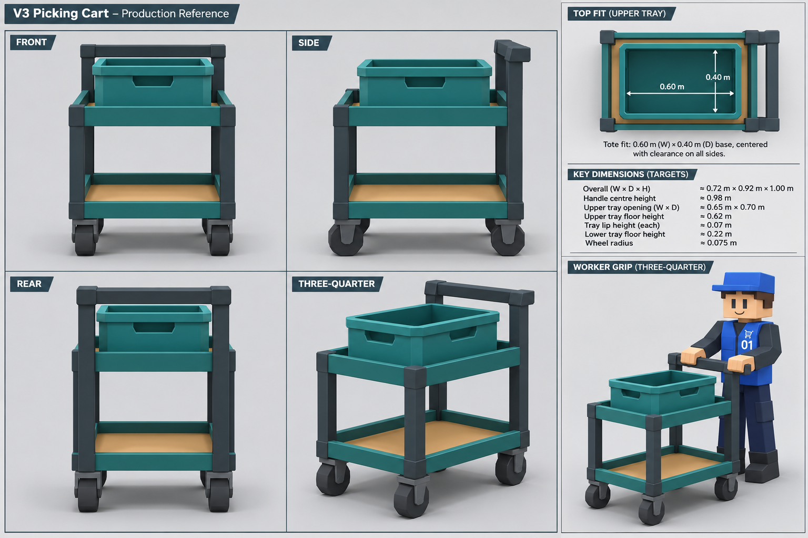
- Front and rear retain the same two open trays, thick square posts, broad rear handle and supported upper-tray tote; lower tray is empty.
- Side shows connected yokes/grounded casters, two distinct tray heights and rear posts rising to the handle; no third shelf or detached rail.
- Quarter shows tray-floor/lip thickness, open under-tray air space and three visible casters; the fourth is normally occluded, not an extra wheel requirement.
- Top-fit inset has a continuous tan border around the tote footprint; the separate tote remains hollow and entirely supported inside the tray visually.
- Grip inset has a blue picker with dark sleeves/trousers; both mitten hands visibly touch the handle, elbows bend and boots meet the floor.
- Matte charcoal/petrol/tan cuboid construction matches R01 and R04; R05 remains the authority for worker body/headwear, while this inset specifies grip interaction.
1536×1024 · SHA256 6cadd12ab0ea6413c89b8c19a062789b4517f113930d1bf62d53415c26e9e46a
R12 vehicle interface updated by C08v0.2
Ownshape unchanged. Current mount Y.65 / fork top.75 / HU bottom.80 and stoppedreach+.40 override the historical registration values below. Exact current interface supplement. Actual model/actions remain pending.
R12 - root PASSDetachable long-load cradle
Independent four-view construction concept; root actual saved-image review PASS. Existing nine R10 references remain PASS.
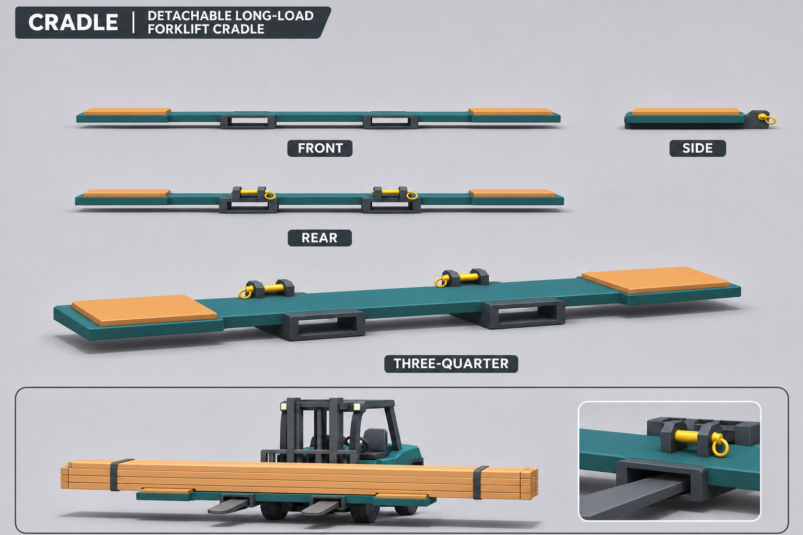
- One very wide shallow petrol cross-frame, exactly two charcoal rectangular open fork mouths and two distant tan upper pads. Far locking ears are largely hidden in this projection; no third pocket or tall tower.
- The same shallow beam/pad and rear locking pin/ear profile remain connected. Laterally separated pockets/pads overlap in this orthographic axis view; one visible profile does not mean one pocket.
- Two open rectangular pocket exits, two rear locking-ear/pin pairs and two distant upper pads connect to the same continuous cross-frame.
- Tangible shallow beam thickness, two open through-pocket mouths, two broad matte pads and two connected rear lock-ear/pin assemblies read as one object.
V1 ambiguous numeric arrows/thick profile corrected in V2. Exact own-bottom envelope: X +/-1.60, Y0..0.15, Z +/-0.425m, including ears/pads/pockets. Forklift mount [0,0.30,1.00]m gives mounted Y0.30..0.45 / Z0.575..1.425. Pads X +/-1.40; pocket axes X +/-0.40 forward +Z. Separate synthetic L05 dimension authority, not pixel measurements.
Matte petrol/charcoal/tan, planar faces and small stepped bevels match R06 equipment. R06 remains vehicle authority, including tan forks; grey forks/simplified wheels in this R12 inset do not override it. LONG remains separate 4.20x0.52x0.65m. Pocket inner dimensions/vertical engagement, positive locks, mass/CoG, support/retention and rating remain C08 pending. No operational admission or model acceptance.
r12-long-cradle.png - 1536x1024 - SHA256 375d96a76808a1c1894341b0ec0d63a8f4235ba58249a7617a6d3daf5ad3b935 - R12 registration 2026-11-07T11:31:18.989856+00:00. R09 sections below retain historical checkpoint wording.
R11 · synthetic fit targets
Dedicated cart coverage is now root PASS and actually inspected in R09. These values are targets from provenance, not measurements of the picture.
| Quantity | Target |
|---|
| Cart W × D × H | 0.72 ×0.92 ×1.00m |
| Tote OUTER base W × D | 0.60 ×0.40m |
| Upper tray USABLE W × D | 0.65 ×0.70m |
| Upper/lower floor Y | 0.62 /0.22m |
| Handle centre Y | 0.98m |
| Lip / wheel radius | 0.07 /0.075m |
Top-fit arrow endpoints are illustrative. Measure outer tote base against usable tray opening in geometry; do not derive dimensions from pixels. R05 controls worker anatomy/headwear; R11 controls grip interaction.
Ground contacts, loaded steering, wheel pivots and exact hand reach remain later model/runtime checks. No geometry PASS is implied.
R03 · отдельный общий масштаб и synthetic dimensions
100px =1м; X/Y front profile, Z depth записан отдельно. Это dimensional reference target, не измерения UCI и не usable interior. C02 обязан явно принять или повторно review изменить targets.
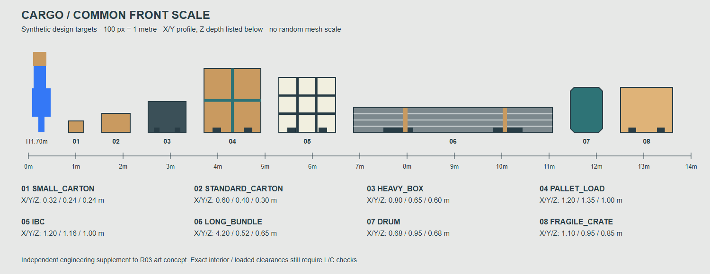
Exact target JSON · Vector source
Конкретные issues / fixes / authority
| ID / region | Наблюдение | Разрешение и владелец |
|---|
H01
R03 entire concept sheet and LONG_BUNDLE lower-middle panel | Initial global axes suggested common metric framing and LONG looked too short. | Current v2 footer says dimensions separate; elongated bundle has full ends/two straps. Separate100px/m common-scale and JSON provide X/Y/Z targets. root · visible_fix_rechecked |
H02
R07 upper-left count; east parcel gate; lower-left gate detail; lower-right role legend | Initial inbound count/direction, gate height annotation and role legend were misleading. | Current sheet shows inbound3/outbound3, IN_E_PARCEL directed into gate,4.5m gate vs8m building, five intended role hues. root · visible_fix_rechecked |
H03
R06 separate right-hand scale figure | Initial fully yellow jumpsuit conflicted with dark shared R05 clothing. | Final inset has dark shirt/navy trousers and yellow vest/headwear; all four vehicle views remain coherent. people_packing · visible_fix_rechecked |
C01
R03 left scale worker; R04 PACK worker; R07 overview/people key; R08 overview workers | Context figures vary in proportions/clothing; R04 packer is all orange and R08 shows blue/purple people at tables. | R05 alone governs worker proportions, dark base clothing, role color/badge. A pictured workstation does not assign a role or event; copy no contextual jumpsuit/assignment. future people/runtime task owner · resolved_by_explicit_authority |
C02
R03 eight enlarged hero cards vs R03 common-scale; cargo in R01/R02/R07/R08 | Hero illustrations are independently magnified; contextual stock size/count is illustrative. | Use R03 targets/common-scale as synthetic metric reference. C02 must explicitly adopt or re-review revised values; C04 usable dimensions/handling checks precede placement. future C02/C04/L09 owners · resolved_by_explicit_authority |
C03
R04 lower tote/parcel strip | The depicted fitted parcel is a workflow shipment package, not a claim every R03 archetype fits a tote or belt. | Retain visible interior/parcel clearance intent; derive actual tote interior and allowed payload dimensions. HEAVY/PALLET/IBC/LONG require compatible handling, never arbitrary mesh scaling. future C/L/M payload and line owners · resolved_by_explicit_authority |
C04
R04 TURN quarter/top inset; R07/R08 contextual line and vehicles | R04 has a faceted curved continuous path; overview line sketches and small vehicles are simplified. | L08 must choose matching port/centreline/clearance before modeling. Do not reuse an orthogonal replay turn cutting the inner rail; R06 supplies actual forklift design. future L08/M13/M14 owners · reference_scope_resolved_engineering_check_later |
D01
provenance/r02.json,r04.json,r05.json,r06.json,r11.json historical status fields | Executor provenance still says VERIFY/pending while authoritative task cards are root PASS. | R09 records both facts without modifying provenance. R10 root manifest must carry authoritative PASS and distinguish historical executor snapshot status. root R10 · nonvisual_followup_explicitly_recorded |
| D02 · cart coverage | Original eight sheets had no dedicated cart production angles. | CLOSED: R11 root PASS and R09 actual image review. Dedicated four views, fitted tote and both-hand grip now included. |
| C05 · R11 top-fit/grip | Printed arrows and contextual worker do not define measured geometry. | Use outer-base/usable-opening targets from provenance; R05 remains worker authority. Cart model/rig owner verifies actual clearances and contacts. |
В восьми исходных листах незакрытых material image contradictions после явного precedence не найдено. R11 coverage gap закрыт actual image review. Geometry остаётся закрыта до R09/R10 и relevant L/C gates.
Actual PNG/provenance identities и выводы: docs/adaptive-v3/evidence/R09.json. Browser HTML capture выполняет root. Accepted PNG/prompts/provenance не менялись. Review UTC 2026-11-07T05:36:17.212265+00:00